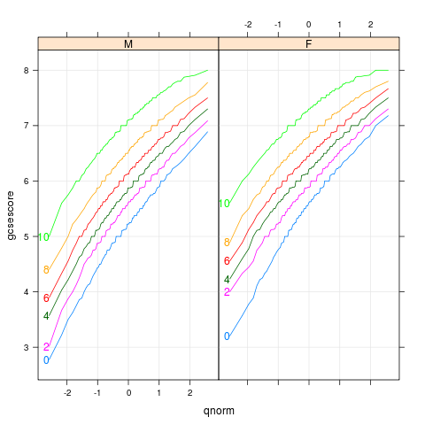
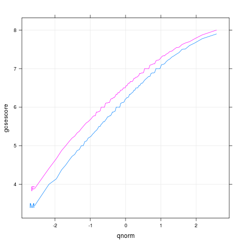
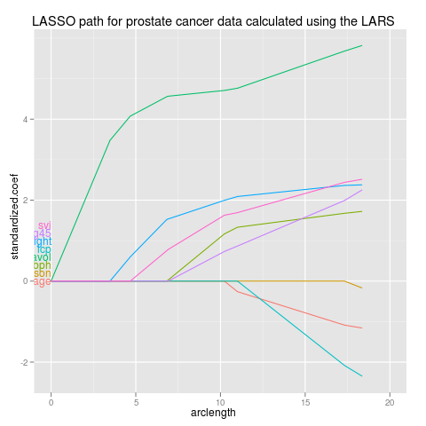

Label first points, bumping labels up if they collide.
 |
bodyweight
data(BodyWeight,package="nlme")
library(lattice)
p <- xyplot(weight~Time|Diet,BodyWeight,groups=Rat,type='l',
layout=c(3,1),xlim=c(-10,75))
direct.label(p,"first.bumpup")
|
|  |
chemqqmathscore
data(Chem97,package="mlmRev")
library(lattice)
p <- qqmath(~gcsescore|gender,Chem97,groups=factor(score),
type=c('l','g'),f.value=ppoints(100))
direct.label(p,"first.bumpup")
|
|  |
chemqqmathsex
data(Chem97,package="mlmRev")
library(lattice)
p <- qqmath(~gcsescore,Chem97,groups=gender,
type=c("l","g"),f.value=ppoints(100))
direct.label(p,"first.bumpup")
|
|  |
lars
data(prostate,package="ElemStatLearn")
pros <- subset(prostate,select=-train,train==TRUE)
ycol <- which(names(pros)=="lpsa")
x <- as.matrix(pros[-ycol])
y <- pros[[ycol]]
library(lars)
fit <- lars(x,y,type="lasso")
beta <- scale(coef(fit),FALSE,1/fit$normx)
arclength <- rowSums(abs(beta))
library(reshape2)
path <- data.frame(melt(beta),arclength)
names(path)[1:3] <- c("step","variable","standardized.coef")
library(ggplot2)
p <- ggplot(path,aes(arclength,standardized.coef,colour=variable))+
geom_line(aes(group=variable))+
ggtitle("LASSO path for prostate cancer data calculated using the LARS")+
xlim(0,20)
direct.label(p,"first.bumpup")
|
 |
projectionSeconds
data(projectionSeconds, package="directlabels")
p <- ggplot(projectionSeconds, aes(vector.length/1e6))+
geom_ribbon(aes(ymin=min, ymax=max,
fill=method, group=method), alpha=1/2)+
geom_line(aes(y=mean, group=method, colour=method))+
ggtitle("Projection Time against Vector Length (Sparsity = 10%)")+
guides(fill="none")+
ylab("Runtime (s)")
direct.label(p,"first.bumpup")
|
 |
ridge
## complicated ridge regression lineplot ex. fig 3.8 from Elements of
## Statistical Learning, Hastie et al.
myridge <- function(f,data,lambda=c(exp(-seq(-15,15,l=200)),0)){
require(MASS)
require(reshape2)
fit <- lm.ridge(f,data,lambda=lambda)
X <- data[-which(names(data)==as.character(f[[2]]))]
Xs <- svd(scale(X)) ## my d's should come from the scaled matrix
dsq <- Xs$d^2
## make the x axis degrees of freedom
df <- sapply(lambda,function(l)sum(dsq/(dsq+l)))
D <- data.frame(t(fit$coef),lambda,df) # scaled coefs
molt <- melt(D,id=c("lambda","df"))
## add in the points for df=0
limpts <- transform(subset(molt,lambda==0),lambda=Inf,df=0,value=0)
rbind(limpts,molt)
}
data(prostate,package="ElemStatLearn")
pros <- subset(prostate,train==TRUE,select=-train)
m <- myridge(lpsa~.,pros)
library(lattice)
p <- xyplot(value~df,m,groups=variable,type="o",pch="+",
panel=function(...){
panel.xyplot(...)
panel.abline(h=0)
panel.abline(v=5,col="grey")
},
xlim=c(-1,9),
main="Ridge regression shrinks least squares coefficients",
ylab="scaled coefficients",
sub="grey line shows coefficients chosen by cross-validation",
xlab=expression(df(lambda)))
direct.label(p,"first.bumpup")
|
 |
sexdeaths
library(ggplot2)
tx <- time(mdeaths)
Time <- ISOdate(floor(tx),round(tx%%1 * 12)+1,1,0,0,0)
uk.lung <- rbind(data.frame(Time,sex="male",deaths=as.integer(mdeaths)),
data.frame(Time,sex="female",deaths=as.integer(fdeaths)))
p <- qplot(Time,deaths,data=uk.lung,colour=sex,geom="line")+
xlim(ISOdate(1973,9,1),ISOdate(1980,4,1))
direct.label(p,"first.bumpup")
|